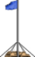

Flaggenposten
Kategorie: Ziele (Objekt)
ID: OFPL
Beschreibung

Flaggenposten werden von den Zielen
Besitznahme und
Hold The Flag verwendet.
Flaggenposten können von einem Team eingenommen werden.
Anwendung
Für das Spielziel
Hold The Flag reicht es aus, einen Flaggenposten in der Landschaft zu platzieren. Dabei kann optional noch der Name des Postens über SetName gesetzt werden. Die Geschwindigkeit, mit der die Flagge eingenommen wird, kann über
GetHTFTime bestimmt werden.
Set
Benötigt jeder
Besitznahme-Flaggenposten.
void Set (string szName, int iRange, int iSpeed);
[opt] szName:
Name des Postens. Standard ist "Alpha".
[opt] iRange:
Entfernung, in der nach Clonks gesucht wird. Standard ist 100.
[opt] iSpeed:
Geschwindigkeit, mit der der Posten eingenommen wird. Standard ist 10.
Capture
Sorgt dafür, dass ein Flaggenposten einem Team zugewiesen wird.
void Capture (int iTeam, bool fSilent);
iTeam:
Team, das den Posten erhalten soll.
[opt] fSilent:
Wenn wahr, wird keine Event-Message ausgegeben.
AddSpawnpoint
Fügt einem Flaggenposten einen neuen Spawnpunkt hinzu.
void AddSpawnPoint (int iX, int iY, string szFunction);
iX:
X-Position des neuen Spawnpunkts.
iY:
Y-Position des neuen Spawnpunkts.
[opt] szFunction:
Wenn angegeben, wird diese Funktion im Szenarienscript aufgerufen. Der erste Parameter ist der spawnende Clonk. So sind zB Fallschirmsprünge als Spawn möglich. Bei Rückgabewert 0 (oder wenn die Funktion nicht existiert) wird der Clonk normal gespawnt.
Siehe auch
Limeox, Oktober 2010